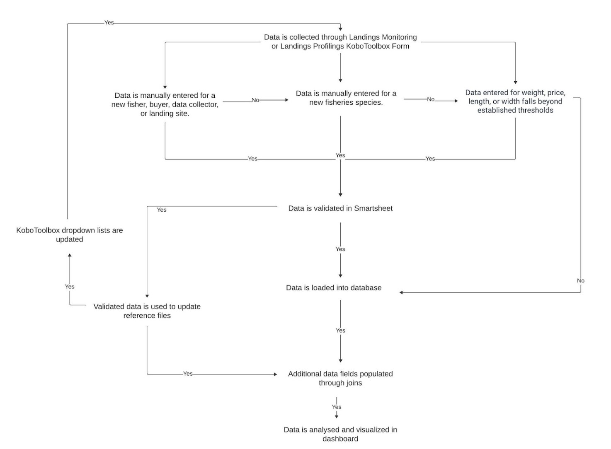

Fanamarinana angona
Torolalana Fanamarinana Ny Angon-Drakitra Momba Ny Jono
Ny angon-drakitra rehetra izay mikoriana amin’ny alalan’ny rafitra angon-drakitra momba ny jono dia voamarina ao amin’ny Smartsheet. Ny angon-drakitra dia alefa ho fanamarinana amin’ny tranga telo; 1) ny anarana vaovao na ny fampahalalana ‘hafa’ dia ampiana tanana ao Amin’ny Kobo Collect, 2) ny sanda isa dia mihoatra ny fetra napetraka na 3) ny anarana ao amin’ny angon-drakitra dia tsy manana lalao mifanaraka amin’izany ao anaty rakitra referansa. Raha vao voamarina ny angon-drakitra, dia havaozina ny angon-drakitra ao amin’ny tahiry sy ny tabilao fanovozan-kevitra. Ny tabilao referansa dia miasa ho toy ny fidirana ho an’ny lisitry ny fihenam-bidy amin’ny endrika KoboToolbox ary misy angona izay ampiana amin’ny angon-drakitra amin’ny alàlan’ny fidirana. Jereo ny hazo fanapahan-kevitra etsy ambany (Sary 1).
Ny angon-drakitra nateraky ny fanamarinana dia alefa any amin’ny iray amin’ireo latabatra efatra: 1) Anarana sy Fitaovana, 2) Fampitandremana Ny Sanda, 3) Karazana na 4) Hafa. Ny toromarika etsy ambany dia mamaritra ny fizotry ny fanamarinana ny angon-drakitra ao amin’ny Smartsheet Dynamic View ho an’ireo latabatra fanamarinana efatra. Ny tabilao fanamarinana tsirairay dia mitaky ny fisafidianana ny sanda marina avy amin’ny lisitry ny fihenam-bidy na ny fampidirana ny sanda marina amin’ny tanana. Ho ampiana ny dingana ho an’ny filàna fanamarinana angon-drakitra amin’ny ho avy, araka ny takiana.
Ny tabilao fanamarinana’ Names and Gears ’ dia ahitana angon-drakitra vaovao avy amin’ny fanadihadiana Kobo rehetra, anisan’izany ny anarana vaovao an’ny mpanjono, mpividy, mpanangona angon-drakitra, toeram-panjonoana, toerana fipetrahana ary fitaovana. Ny “fampitandremana momba ny sanda” dia ahitana fampahalalana isa nangonina avy amin’ny Landings Monitoring na Landings Profiling survey izay nanamarika ny sandan’ny angon-drakitra mifototra amin’ny tokonam-baravarana efa napetraka mialoha. Ny tabilao fanamarinana ‘Karazana’ dia ahitana sary sy anarana vaovao avy amin’ny fanadihadiana rehetra mba hanamarinana ireo karazana vaovao amin’ny fampiasana dingana fanamarinana roa. Farany, ny tabilao fanamarinana angon-drakitra’ Hafa ‘dia misy fampahalalana’ hafa ’ nangonina avy amin’ny Landings Profiling, Community Profiling na Household Survey ary voamarina indrindra ho an’ny tanjona fandikan-teny.
Ny hafatra mailaka isan’andro dia alefa miaraka amin’ny fampahalalana sy rohy momba ny fomba hamitana ny fanamarinana ny angona (jereo ny torolàlana amin’ny antsipiriany etsy ambany). Ny fampandrenesana fanampiny avy amin’ny Smartsheet na Barefoot Ocean dia azo alefa amin’ny alàlan’ny mailaka hanarahana ny fisafidianana fanamarinana angon-drakitra tsy feno, raha ilaina.
Dingana 1: Omeo Adiresy mailaka point of contact Ho an’ireo tompon’andraikitra amin’ny fanamarinana angon-drakitra ny Barefoot Ocean.
Ny fikambanana mitantana mpiara-miombon’antoka maro dia afaka manome ny teboka rehetra amin’ny fampahalalana momba ny fifandraisana.
Ny mpiara-miombon’antoka tsirairay dia afaka manome fampahalalana momba ny fifandraisana.
Ireo teboka fifandraisana dia hahazo fampandrenesana fanamarinana data amin’ny alàlan’ny mailaka.
Dingana 2: Zahao ny mailakao raha misy fangatahana fanamarinana data.
Hahazo mailaka avy amin’ny “Smartsheet Automation” ianao (Sary 2)
Ny mailaka dia ahitana hafatra misy rohy hanohizana ny fanamarinana amin’ny alalan’ny “Fijery Mavitrika” na “Fangatahana Misokatra”. Dynamic View dia endrika latabatra ary Ny Fangatahana Misokatra dia hitarika anao amin’ny endrika fanamarinana.
Raha hisokatra amin’ny ” Dynamic View “(Dingana 3, Safidy A), tsindrio ny rohy izay manomboka amin’ny”https://dynamicview.smarthseet.com….”
Raha hanokatra ny endrika fangatahana fanavaozana (Dingana 3, Safidy B), tsindrio ny bokotra manga “open request”
Ny fijerena mialoha ireo fidirana mila hamarinina dia hiseho eo ambanin’ity hafatra ity, saingy tsy ho azonao atao ny manamarina ny angona mivantana amin’ny mailaka
Eo amin’ny farany ambany amin’ny mailaka, misy rohy mankany amin’ny “Mandehana any amin’ny takelaka”; na izany aza, voafetra ny fidirana amin’ny takelaka fototra. Azafady mba avereno jerena ny fanamarinana ny angon-drakitrao Amin’ny alàlan’ny dynamic view, Open request, na ny tatitra manokana momba ny mpiara-miasa aminao (ho avy tsy ho ela).
Sary 1: hazo fanapahan-kevitra momba ny Fanamarinana Ny Angon-drakitra.

Sary 2: Santionany Smartsheet Fanamarinana Mailaka Hafatra

Dingana 3, Safidy A: Fenoy Ny fanamarinana ny angon-drakitrao Amin’ny Alàlan’ny Dynamic View(recommended)
Ho an’ity safidy ity dia mila mamorona kaonty Smartsheet maimaim-poana ianao. Hotarihina avy amin’ny mailaka ianao hanangana kaonty.
Tsindrio ny Rohy Dynamic View ao amin’ny fangatahana mailaka.
Hisokatra ny varavarankelin’ny navigateur internet vaovao miaraka amin’ny fametrahana toy ny latabatra ho an’ny fidirana rehetra. Eto ianao dia afaka mamakivaky mora foana ireo fidirana rehetra mila fanamarinana.
Tsindrio ny laharana hanombohana ny fanamarinana.
Hiseho eo ankavanana ny tontonana” Details”.
Avereno jerena ny sehatry ny toe-javatra ary fenoy ny sehatry ny fanamarinana. Ny saha fanamarinana dia ahitana ny angon-drakitra izay hafindra any amin’ny angon-drakitra farany (Tabilao 1).
Mametraha hevitra, RAHA tsy misy zavatra mila ny saintsika. Ny mpiasan’ny Barefoot Ocean dia handinika ny fanehoan-kevitra ary hamaly araka ny tokony ho izy.
Tsindrio ny bokotra “Save” manga mba hamonjy ny safidinao.
Raha vantany vao voamarina dia hanjavona amin’ny fomba fijerinao mavitrika io laharana io.
Tsindrio ny laharana manaraka ary avereno ny dingana hamenoana ny fanamarinana ho an’ny fidirana rehetra.
Azonao atao ny mivoaka sy miditra indray amin’ny fipihana ny rohy dynamic view avy amin’ny mailakao na miditra ao amin’ny kaontinao amin’ny fotoana rehetra. Tsy mila manamarina ny fidirana rehetra amin’ny seza iray ianao.
Azonao atao ny manisy tsoratadidy ity rohy ity ary miverina amin’ny fotoana rehetra.
Tabilao 1: saha Na tsanganana Voalohany ao amin’ny tabilao fanamarinana. Manome vaovao ilaina hanamarinana ny angon-drakitra ny sehatry ny toe-javatra. Ny saha fanamarinana dia feno angon-drakitra izay hafindra any amin’ny angon-drakitra fototra. Ny saha fanamarinana ihany no azo ovaina. Ny saha sasany dia tsy hita afa-tsy amin’ny tontonana “Details” rehefa tsindrio ny laharana iray ao amin’ny latabatra Fijerena Mavitrika.
| Sehatra latabatra fanamarinana | Famaritana ny saha | Karazana saha |
|---|---|---|
| All Data Validation Tables | ||
| partner | anaran’ny fikambanana manangona ny angona | teny manodidina |
| admin3_landed | Tanàna na zana-tanàna izay nandefasana sy nandraketana ny trondro | teny manodidina |
| data_collector | Anaran’ny olona nanangona ny angona Tao Amin’ny kobo (enumerator) | teny manodidina |
| Names and Gears | ||
| kobo_field | Ny saha avy amin’ny endrika kobocollect izay mila hamarinina na anarana izay tsy mifanaraka amin’ny rakitra referansa. | teny manodidina |
| new_data | Ny sanda nampidirina ho an’ny kobo_field mifanaraka amin’izany | teny manodidina |
| ref_match1 | Anarana mifanandrify akaiky izay efa misy ao amin’ny tahiry. Raha banga, tsy misy anarana efa misy mifanaraka amin’ny anarana ao amin’ny tsanganana “new_data” | teny manodidina |
| ref_match2 | Anarana mifanandrify akaiky izay efa misy ao amin’ny tahiry. Raha banga, tsy misy anarana efa misy mifanaraka amin’ny anarana ao amin’ny tsanganana “new_data” | teny manodidina |
| ref_match3 | Anarana mifanandrify akaiky izay efa misy ao amin’ny tahiry. Raha banga, tsy misy anarana efa misy mifanaraka amin’ny anarana ao amin’ny tsanganana “new_data” | teny manodidina |
| validation_options | Safidio ny saha misy angon-drakitra marina (new_data, ref_match1, ref_match2, ref_match3), ampidiro sanda hafa (hafa), na esory (esory ny laharana amin’ny famakafakana satria tsy azo hamarinina ny angona). Ilaina. Hita ao amin’ny tontonana Details Ihany. Hanjavona ny fidirana raha vao voamarina ny angona. | fanamarinana |
| other | Ampidiro sanda hafa raha tsy misy marina ny safidy fanamarinana. Ilaina raha” hafa ” voafantina avy amin’ny validation_options. Hita ao amin’ny tontonana Details Ihany. | fanamarinana |
| landings_submission_ids | Lisitry ny id fandefasana ity sanda vaovao ity dia hita ao amin’ny, avy amin’ny endrika kobo fanaraha-Maso ny fipetrahana | teny manodidina |
| profiling_submission_ids | Lisitry ny id fandefasana ity sanda vaovao ity dia hita ao amin’ny, avy amin’ny landings profiling kobo form | teny manodidina |
| hhs_submission_ids | Lisitry ny karapanondro fandefasana ity sanda vaovao ity dia hita ao amin’ny, avy amin’ny endrika household survey kobo. | teny manodidina |
| species_group | Ny vondrona karazana mifandray amin’ny anarana vaovao, araka ny nangonina tao amin’ny endrika kobo. Hiseho izany raha toa ka sokajy fitaovana ny” kobo_field”. | teny manodidina |
| gear_type | Ilaina RAHA manamarina ny anaran’ny fitaovana vaovao. Lisitry ny karazana fitaovana azo ampifandraisina amin’ny anarana fitaovana voamarina. | fanamarinana |
| fisher_gender | Ny lahy sy ny vavy mifandray amin’ny mpanjono vaovao, araka ny nangonina tao amin’ny endrika Kobo. Tsy hiseho izany raha tsy anarana fisher ny” kobo_field”. | teny manodidina |
| buyer_gender | Ny lahy sy ny vavy mifandray amin’ny mpividy vaovao, araka ny nangonina tao amin’ny endrika Kobo. Hiseho izany raha toa ka anaran’ny mpividy ny” kobo_field”. | teny manodidina |
| Value Warnings | ||
| fisher_name | Anaran’i fisher izay nahazo ny trondro | teny manodidina |
| date_landed | Nisy ny fanjonoana daty | teny manodidina |
| local_name | Karazana anarana eo an toerana | teny manodidina |
| warning_calc | Sandan’ny singa: lanja/isam-batan’olona, vidiny / lanja, halavany/isam-batan’olona, sakany / isam-batan’olona | teny manodidina |
| warning | Karazana fampitandremana | teny manodidina |
| numerator | Sandan’ny numerator fampitandremana: lanja, vidiny, halavany | teny manodidina |
| numerator_unit | Unit of numerator: kg, g, lb, ons, USD, IDR, PHP, cm | teny manodidina |
| denominator | Sandan’ny denominator: manisa, lanja | teny manodidina |
| denominator_unit | Vondrona mpisolo anarana: isa, kg, g, lb, ons | teny manodidina |
| correct | Y = marina ny soatoavina, n=diso ny soatoavina, Esory = esory amin’ny famakafakana satria tsy azo hamarinina ny soatoavina. Ilaina. | fanamarinana |
| correct_numerator | Raha marina = Y, ny sanda dia auto-populated, raha marina = N, ampidiro ny sanda marina | fanamarinana |
| correct_denominator | Raha marina = Y, ny sanda dia auto-populated, raha marina = N, ampidiro ny sanda marina | fanamarinana |
| correct_numerator_unit | Raha diso ny numerator_units dia safidio ny safidy marina avy amin’ny dropdown | fanamarinana |
| data_origin | Dataset ny angon-drakitra dia avy amin’ny (Landings fanaraha-maso na profiling). | teny manodidina |
| submission_id | Id fandefasana avy amin’ny endrika Kobo. Ampiasao izany mba hampitahana amin’ny angon-drakitra manta, raha ilaina, ho fanamarinana. | teny manodidina |
| Species | ||
| data_origin | Dataset ny angon-drakitra dia avy amin’ny (Landings Fanaraha-maso ‘lm’, Landings Profiling ‘lp’, Community Profiling ‘cp’ Na Household Survey ‘Hhs’) | teny manodidina |
| admin1 | Admin1 izay nipetrahan’ny trondro sy noraketina an-tsoratra. | teny manodidina |
| admin2 | Admin2 izay nipetrahan’ny trondro sy noraketina. | teny manodidina |
| fisher_name | Anaran’i fisher mifandray amin’ity angon-drakitra vaovao ity. | teny manodidina |
| new_species_photo | Rohy mankany amin’ny sary izay natolotra Tao Amin’ny Kobo Collect | teny manodidina |
| new_data | Ny sanda nampidirina ho anarana vaovao eo An-toerana ao Amin’ny Kobo Collect Na anarana eo an-toerana SY anarana siantifika id (localname_scientificspecies) izay tsy mifanaraka amin’ny anarana hita ao amin’ny species_ref intsony | teny manodidina |
| ref_match1 | Anarana mifanandrify akaiky izay efa misy ao amin’ny tahiry. Raha banga, tsy misy anarana efa misy mifanaraka amin’ny anarana ao amin’ny tsanganana “new_data” | teny manodidina |
| ref_match2 | Anarana mifanandrify akaiky izay efa misy ao amin’ny tahiry. Raha banga, tsy misy anarana efa misy mifanaraka amin’ny anarana ao amin’ny tsanganana “new_data” | teny manodidina |
| ref_match3 | Anarana mifanandrify akaiky izay efa misy ao amin’ny tahiry. Raha banga, tsy misy anarana efa misy mifanaraka amin’ny anarana ao amin’ny tsanganana “new_data” | teny manodidina |
| eng_common_name_new | Anarana iombonana amin’ny teny anglisy amin’ny karazana vaovao. Azafady mba omeo raha fantatra, raha tsy izany dia avelao ho banga. (Tsy ilaina) | fanamarinana |
| scientific_family_new | Anaran’ny fianakaviana siantifika amin’ny karazana vaovao. Azafady mba omeo raha fantatra, raha tsy izany dia avelao ho banga. (Tsy ilaina) | fanamarinana |
| scientific_species_new | Anaran’ny karazana siantifika amin’ny karazana vaovao. Azafady mba omeo raha fantatra, raha tsy izany dia avelao ho banga. Ilaina: raha tsy fantatra ny anaran’ny karazana dia apetraho azafady ny haavon’ny famantarana taxonomika (ohatra ny anaran’ny Fianakaviana ,anarana mahazatra anglisy) | fanamarinana |
| submission_id | Id fandefasana avy amin’ny endrika Kobo. Ampiasao izany mba hampitahana amin’ny angon-drakitra manta, raha ilaina, ho fanamarinana. | teny manodidina |
| validation_options | Safidio ny saha misy angon-drakitra marina (local_name_new, ref_match1, ref_match2, ref_match3), ampidiro sanda hafa (hafa), na esory (esory ny laharana amin’ny famakafakana satria tsy azo hamarinina ny angona). Ilaina. Hita ao amin’ny tontonana Details Ihany. Hanjavona ny fidirana raha vao voamarina ny angona. | fanamarinana |
| other | Ampidiro sanda hafa raha tsy misy marina ny safidy fanamarinana. Ilaina raha” hafa ” voafantina avy amin’ny validation_options. Hita ao amin’ny tontonana Details Ihany. | fanamarinana |
| latest_comment | Ity tsanganana ity dia mitahiry ny fanehoan-kevitra farany natao ho an’io laharana io. Raha hijery ny fifanakalozan-kevitra manontolo momba ny fanehoan-kevitra momba an’io laharana io, tsindrio fotsiny na aiza na aiza eo amin’ny laharana. Hiseho ny tontonana details ary tsindrio ny tabilao “Comments” raha hijery ny fanehoan-kevitra rehetra momba an’io laharana io. | fiara |
| Other | ||
| kobo_field | Ny saha avy amin’ny endrika KoboToolbox izay mila hamarinina. Mety ho avy amin’ny fanontaniana (q) ao amin’ny Landings Profiling (‘lp’), Community Profiling (‘cp’) na Household Survey (‘hhs’) izany. | teny manodidina |
| new_data | Ny sanda nampidirina ho an’ny kobo_field mifanaraka amin’izany | teny manodidina |
| data_origin | Dataset ny angon-drakitra dia avy amin’ny (Landings profiling, Community profiling, Household survey). | teny manodidina |
| submission_id | Id fandefasana avy amin’ny endrika Kobo. Ampiasao izany mba hampitahana amin’ny angon-drakitra manta, raha ilaina, ho fanamarinana. | teny manodidina |
| validation_options | Safidio ny saha misy angon-drakitra marina (new_data), ampidiro sanda hafa (hafa), na esory (esory ny laharana amin’ny famakafakana satria tsy azo hamarinina ny angona). Ilaina. Hita ao amin’ny tontonana Details Ihany. Hanjavona ny fidirana raha vao voamarina ny angona. | fanamarinana |
| other | Ampidiro sanda hafa raha tsy misy marina ny safidy fanamarinana. Ilaina raha” hafa ” voafantina avy amin’ny validation_options. Hita ao amin’ny tontonana Details Ihany. | fanamarinana |
| validated_data_english | Ilaina. Ampidiro ny fandikan-teny anglisy ny new_data na saha hafa raha ‘hafa’ no voafidy ho safidy fanamarinana. Hita ao amin’ny tontonana Details Ihany. | fanamarinana |
Sary 3: Ohatra Fampitandremana Momba Ny Lanja Mavitrika

Sary 4: Ohatra Ny Dynamic View - Details Panel

Dingana 3, Safidy B: Fenoy ny fanamarinana ny angon-drakitrao amin’ny Alàlan’ny ‘Fangatahana Misokatra’
Ho an’ity safidy ity dia tsy mila manana fidirana kaonty Smartsheet ianao .
Tsindrio ny bokotra” open request ” ao amin’ny hafatra mailaka fanamarinana.
Hisokatra ny varavarankelin’ny navigateur internet vaovao miaraka amin’ny fanamboarana endrika ho an’ny fidirana tsirairay
Avereno jerena ny sehatry ny toe-javatra ary fenoy ny sehatry ny fanamarinana. Ny saha fanamarinana dia ahitana ny angon-drakitra izay hafindra any amin’ny angon-drakitra farany (Tabilao 1).
Tsindrio manaraka eo amin’ny farany ambany amin’ny efijery mba hamakivaky ny fidirana tsirairay izay mila hamarinina.
Mba hialana amin’ny fidirana (ohatra, raha mbola tsy azonao antoka izay valiny hofidiana) tsindrio “Next” nefa tsy manao safidy ao amin’ny tsanganana ‘validation_options’. Hiseho ny fidirana manaraka ho fanamarinana.
Raha mila mivoaka ny pejy ianao na mijanona alohan’ny hanamarinana ny fidirana rehetra dia tokony hotehirizina ny safidinao amin’ny fotoana hanokafanao indray ny fangatahana. Rehefa manokatra hanohy dia tsindrio fotsiny Ny “Next” mandra-pahitanao fidirana mila fanamarinana.
Rehefa tonga amin’ny fidirana farany ianao dia tsindrio “Vita”. Hisy hafatra mipoitra hanontany raha Toa ianao ka ‘Vonona ny handefa ny fanavaozanao?’:
Tsindrio “Miverena” raha mila mandinika ianao
Kitiho ny “Alefaso Ny Fanavaozana” handefasana fanamarinana
Zahao ny boaty” Alefaso amiko ny kopian’ny valinteniko ” raha tianao ny kopian’ny valinteninao nalefa tamin’ny mailakao
Raha tsindrio “Alefaso amiko ny kopian’ny valinteniko” dia hahazo mailaka mitondra ny lohateny hoe “Update Confirmation: Names and Gears”ianao.
Hisy latabatra mamintina izay lahatsoratra nohavaozina. Tsy ho tafiditra ao ireo fidirana izay tsy nisy safidy voafantina tao amin’ny ‘validation_options’.
Ity mailaka ity dia mety misy rohy mankany amin’ny anaran’ny takelaka “Data Validation - Names and Gears”; na izany aza, mihidy ny fidirana amin’ity takelaka ity.
Raha te hahita izay fanamarinana sisa ilaina dia mila miandry ny mailaka fangatahana fanavaozana manaraka ianao na manokatra Ny Dynamic View.
Sary 5: Ohatra amin’ny endrika “Fangatahana Misokatra”

Fanontaniana Apetraka Matetika:
- Afaka miasa amin’ny fanamarinana angon-drakitra miaraka ve ny olona maro?
- Eny, na izany aza, raha vao voamarina amin’ny Fomba Fijery Mavitrika ny fidirana (laharana) dia tsy ho hita intsony izany.
- Mila kaonty Smartsheet ve aho?
- Mba hamenoana ny fanamarinana ny angon-drakitra amin’ny Alàlan’ny Dynamic View (izany hoe ny table view). Tsy mila kaonty karama ianao, miaraka amin’ny fitsapana maimaim-poana na dikan-teny maimaim-poana (rehefa vita ny fitsarana anao), dia ho afaka hijery sy hifanerasera amin’ireo rakitra Smartsheet rehetra an’ny Barefoot Ocean ianao.
- Inona no mitranga aorian’ny fanamarinana ny angona?
- Amin’ny tranga sasany, ny angon-drakitra dia handalo famerenana fanampiny avy amin’ny Barefoot Ocean data team. Ny angon-drakitra voamarina dia havaozina ao amin’ny tahiry, ary rehefa mety, ny menus dropdown dia havaozina ao amin’ny rakitra sy endrika kobo reference (Sary 6). Ny angon-drakitra izay tsy voamarina dia tsy hiseho amin’ny sary an-tsary na statistika amin’ny dashboard, fa ho hita ao amin’ny fampidinana angona manta.
Raha sendra misy lesoka ianao amin’ny fotoana rehetra, manana fanontaniana, na mila fanohanana amin’ny famitana ny fanamarinana data, azafady mba mifandraisa aminay amin’ny barefootinfo@barefootocean.org.
Sary 6: Fanamarinana Ny Angon-Drakitra Amin’ny Fizotry Ny Asa Momba Ny Rakitra